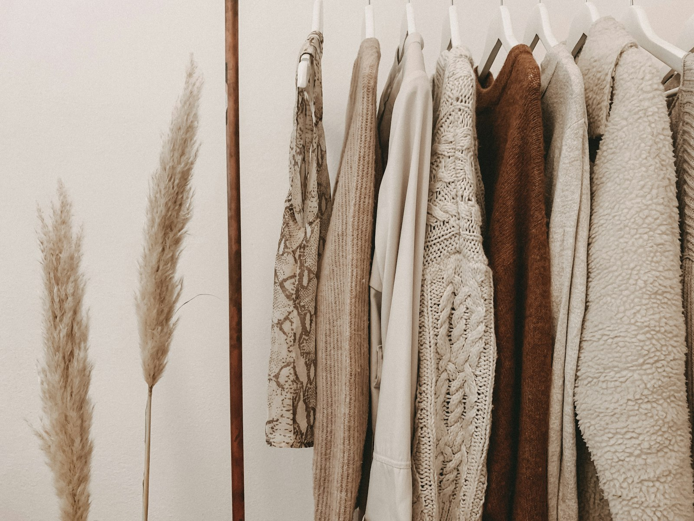
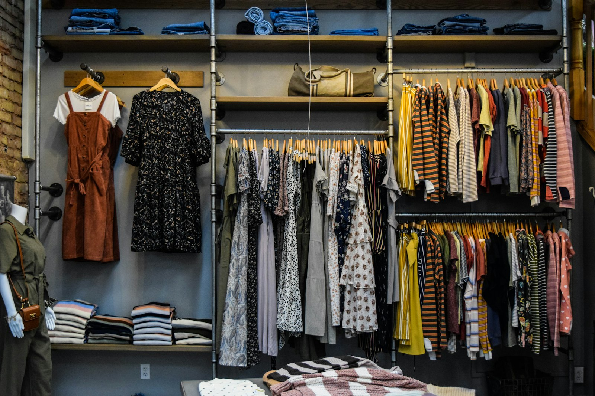
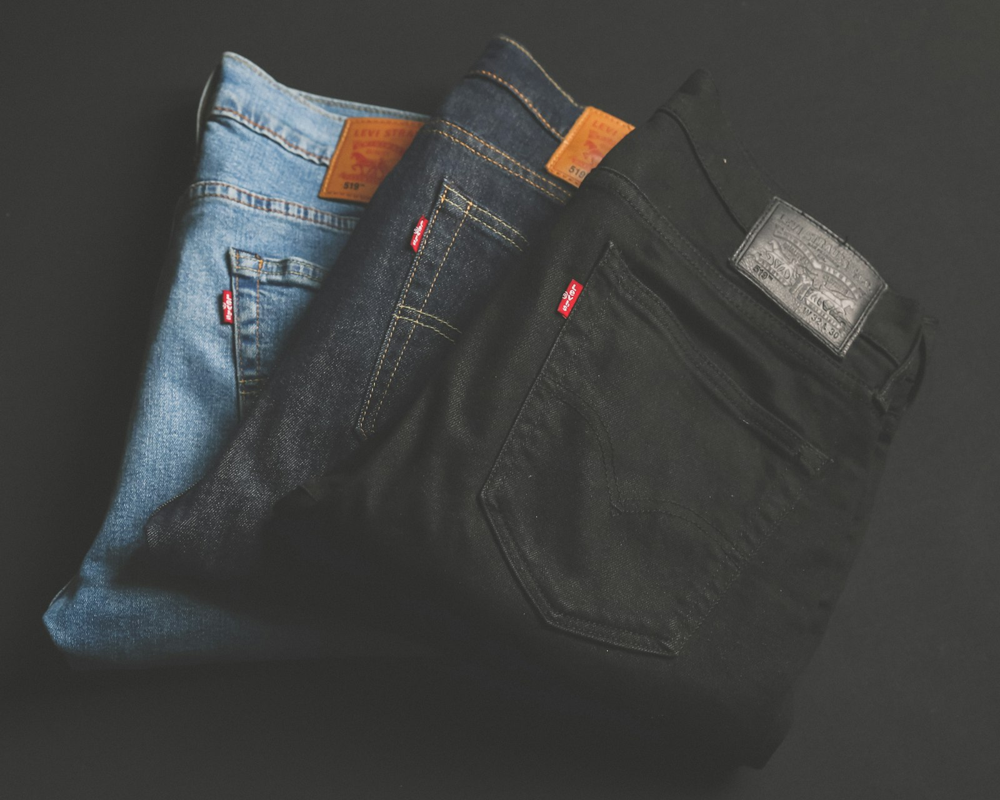

まずは卸売サイトを
のぞいてみてください。
会員登録は無料。どんな古着が、いくらで仕入れられるか。ご自身の目で確かめられます。
仕入れに関するご質問は無料です。通常2〜3営業日以内にご返信します。

10点からの小ロット。個品（デタウリ）は採寸＋撮影データ付き。
「副業で物販を始めたい」を、仕入れの面からまるごと支えます。
✓会員登録・年会費は無料✓10点から注文OK✓オンラインで完結
古着の物販は、仕入れ・検品・採寸・撮影と、売る前の準備が意外と大変です。NKonline の卸売は、その手前の負担を減らすことに特化しています。
個品（デタウリ）は採寸データと撮影画像を付け、検品を済ませた状態でお渡し。10点という小ロットから始められるので、「まず試したい」段階の方でも、在庫を抱え込むリスクを抑えてスタートできます。

個品（デタウリ）は着丈・身幅などの採寸データと撮影画像を添付。採寸・撮影の作業を省けるので、商品説明の作成や出品がスムーズです。
大量仕入れは不要。10点から注文できるので、ジャンルを試しながら少しずつ広げられます。
無料の会員登録で会員価格に。さらにご購入金額に応じてポイントが貯まり、次回の仕入れに使えます。買うほどランクが上がり、特典も増えます。
クレジットカード・コンビニ払い・銀行振込に対応。ご都合に合わせてお選びいただけます。
会員登録から商品到着まで、すべてオンラインで完結します。
卸売サイトから無料で会員登録。登録するとすぐに会員価格で仕入れできます。
個品（デタウリ）は採寸データと写真を見ながら、まとめ仕入れ（アソート）はセット内容を見ながら選べます。
カート上で割引・送料を確認し、ご希望の方法でお支払い。10点から注文できます。
個品は検品・採寸・撮影まで済んだ状態でお届け。届いたその日から販売に取りかかれます。
商品ごとの卸価格は、卸売サイトでいつでもご確認いただけます。
無料の会員登録で、さらにお得に仕入れられます。
登録も年会費も無料。会員になると、お得な会員価格で仕入れられます。まずは登録だけでも大丈夫です。
ご購入金額に応じてポイントが貯まり、次回の仕入れに使えます。ランクが上がるほど、還元や特典もアップします。
一定金額以上のご注文は送料無料になる場合があります。割引や送料はカート画面でその場で確認できます。
1点ずつ厳選した古着を、採寸データと撮影画像付きで仕入れられる個品サイト。気になる商品だけをピンポイントで選べます。
商品と卸価格を見る →
テーマごとにまとめた古着のセット販売。一度にまとまった在庫を確保したい方に。効率よく品揃えを増やせます。
セット内容と価格を見る →※ 商品ごとの卸価格、最新の会員特典・キャンペーン内容は卸売サイトでご確認ください。会員登録・年会費は無料です。送料はお届け先・配送方法により異なります。
会員登録は無料。どんな古着が、いくらで仕入れられるか。ご自身の目で確かめられます。
仕入れに関するご質問は無料です。通常2〜3営業日以内にご返信します。